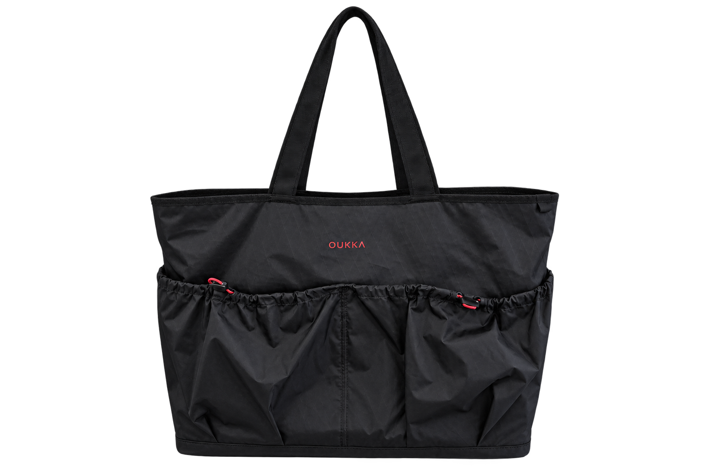

DESIGN WHAT
DESERVES TO STAY.
走進城市，也走進山裡。
OUKKA 從長期使用反推設計，讓一件物件進入更多日常。
Less to carry. More to live with.
THE OU4232
REVERSIBLE UTILITY TOTE
CANVAS × TECHNICAL
ONE OBJECT.
MORE SITUATIONS.
帆布的日常感，機能面的收納結構。
翻過來，就是另一種使用狀態。

NO FIXED
DESTINATION.
OUKKA / OUTDOOR LIFE
山、海與日常之間。
CAMPAIGN FILMPHASE 0
NOT EVERYTHING
SHOULD MAKE IT.
不是每個想法，都值得上市。
透過原型、使用與修正，判斷什麼值得留下。
KEEPCHANGEDROP
OUKKAPRODUCT RECORD ↗

OU4232
一件產品。持續更新的紀錄。
OPEN PRODUCT RECORD ↗
WORTH KEEPING.
WORTH REPAIRING.
修補，是為了繼續使用。
時間留下的痕跡，不必全部抹去。
 LIFETIME REPAIR
LIFETIME REPAIR